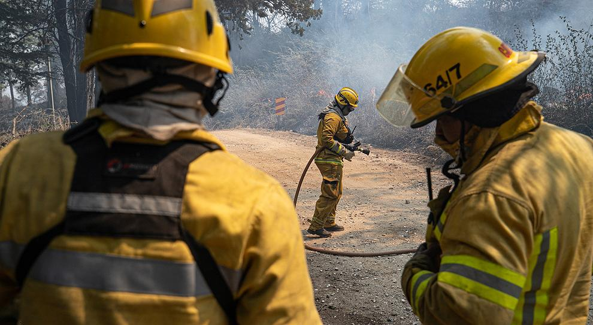
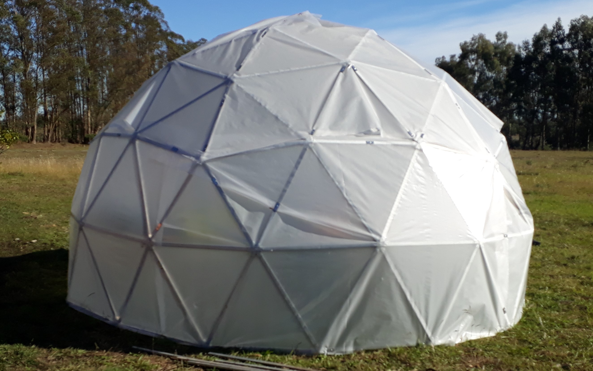

Incendios forestales en cordoba
Bomberos de mendoza de suman al combate de incendios en cordoba y San luis
Al combate del fuego en Córdoba y San Luis se sumaron este sábado brigadistas y guardaparques de Mendoza, quienes se trasladaron este sábado hasta la localidad de Papagayos –ubicada en San Luis, en el límite con Córdoba-, informaron fuentes oficiales.
Invernaderos en Domos
La nueva forma de los invernaderos
Coronaviruz en Argentina
Confirmaron 8841 nuevos casos y 206 fallecidos en las últimas 24 horas